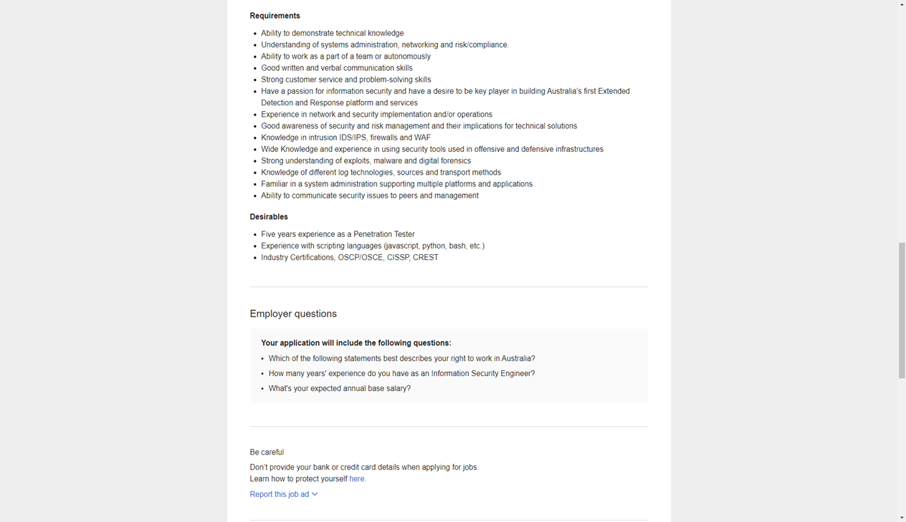

Ideal job
Found an advertisement for a penetration tester position. I find this profession very fascinating. Finding weaknesses in systems sounds like a challenging job and there is a shortage of skilled technicians right now and in the future as well. I like to learn always, and a profession where everything is constantly developing and staying up to date is a must, sounds good.
Skills, qualifications and experience required to be a penetration tester
A Plan to acquire the skills needed for my Ideal job
A degree in Information Technology is a good way of getting started. This position requires a solid foundation and as I am working full time structured learning is most effective for my situation. With good time management finding the time for studies should be doable.After few years should be able to demonstrate a good technical knowledge of tools and methods used for security risk analyses.
Furthermore, need to have a clear understanding of how systems work and where are the weaknesses. An actual five-year work experience as a penetration tester is desirable requirement for this position. The job also requires, that the candidate is a team player, has got a good verbal and written communication skills and strong customer service and problem-solving skills. Desirable is an experience with most used scripting languages and having industry certifications like OSCP/OSCE, CISSP and CREST
Job advertisment position

Current skills and qualifications
I have positioned myself perfectly having pretty much no skills for this job. This gives me an opportunity to have a clear view what do I have to learn to become a good penetration tester.
I have got a leading hand position experience in manufacturing environment for about 5 years. With very strict deadlines, and coordinating the work of a small team, I believe to have a good stress tolerance with difficult situations. I am a good problem solver and have got lot of experience with talking with clients and suppliers even when situation is complicated.
Steps for the position
Firstly, I need to get a solid foundation in Information Technologies. For that a bachelor’s in information technologies is a good start. With that I can get a job as a system or a network administrator.
Some time at that position and further training should make me employable in the field
So to conclude:
- Getting a degree in IT
- Get proffessional experience, will have to work in an entry level position for a while to gain real life experience
- Meanwhile always learn more about the technology, do other short courses that help to cement the knowledge
- Start working as a penetration tester freelancer on the side
Who is penetration tester?
Penetration tester also called as an ethical hacker. As far as education, good starting place would be a bachelor degree in the field of IT, cybersecurity or computer science. Need to have a good knowledge of network systems and different operation systems
I think the ability to think outside of the box would greatly benefit someone looking into that position. In the long, run as the technology is rapidly advancing , desire to learn new things and stay updated about changes is a must.Currently have little knowledge of anything regarding IT so means that I have lot to learn about the tools of trade. On the other hand as I have worked in different industries over the years in different countries I have a good knowledge of how systems are being used in real life.
back to main page